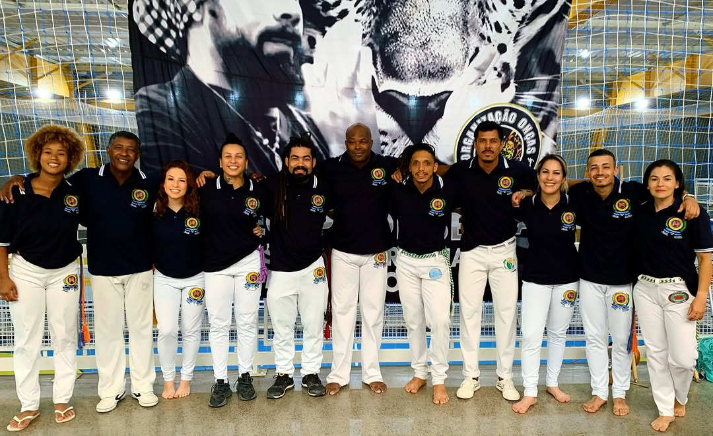
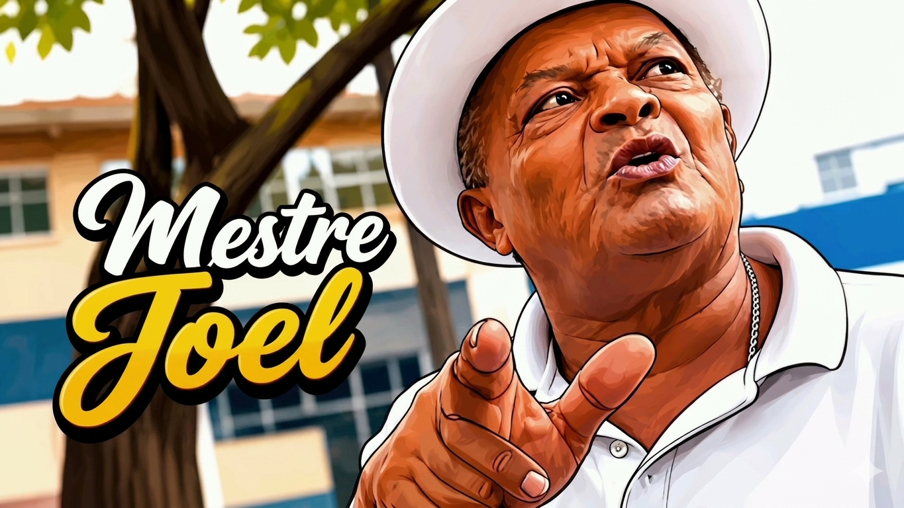
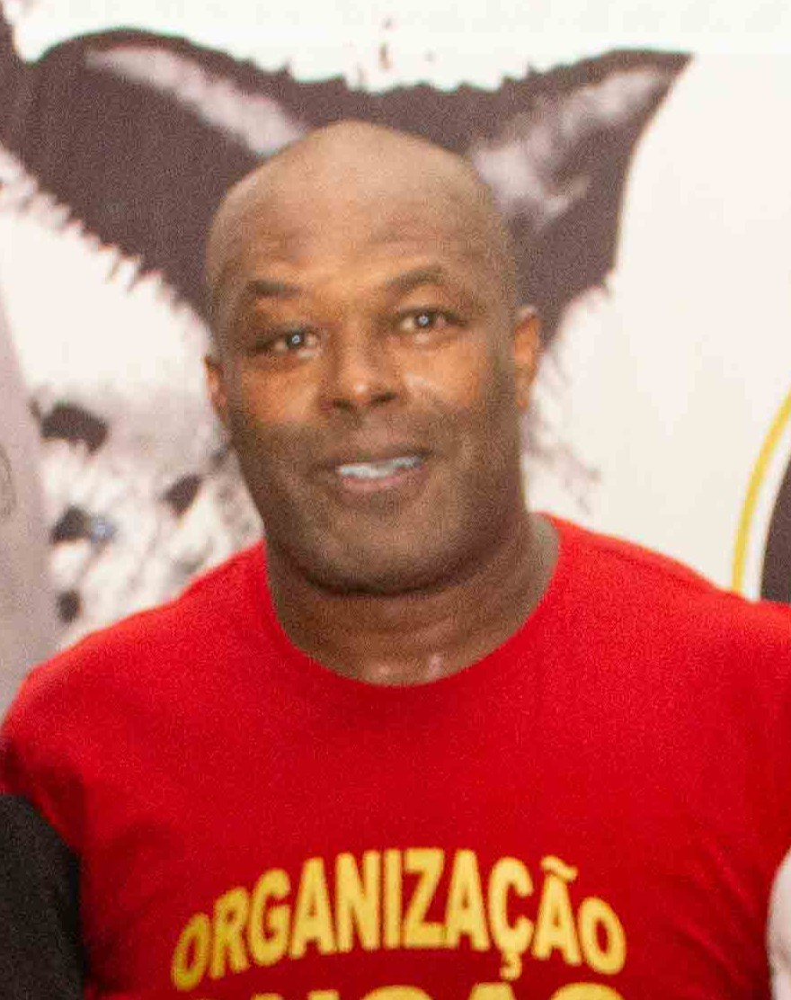
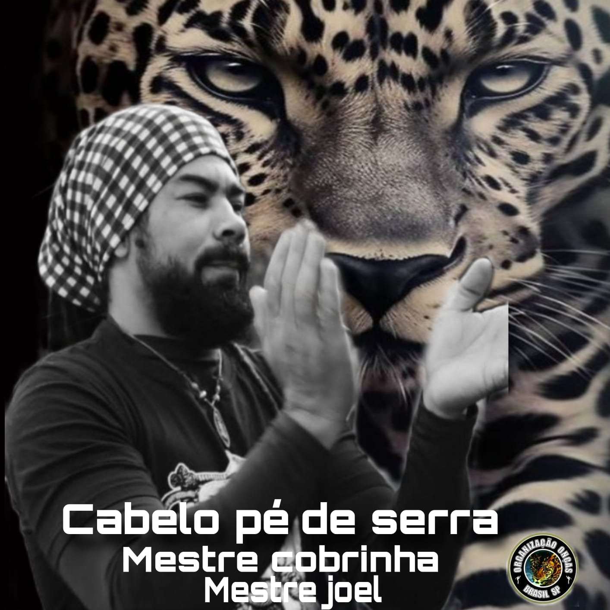

Nuestra Linaje – Árbol Genealógico
La raíz de nuestra capoeira: Mestre Bimba → Mestre Joel → Mestre Cobrinha → Contramestre Cabelo Pé de Serra.

El corazón del grupo, donde tradición, música y movimiento se encuentran.
La Organización Onça nace a partir de una de las raíces más tradicionales de la Capoeira Regional en Salvador, Bahia. Provenimos directamente de la línea de Mestre Bimba, creador de la Capoeira Regional y responsable de transformar la arte en un método, disciplina e identidad cultural.
La historia continúa con Mestre Joel, discípulo de Mestre Bimba, quien difundió esta esencia en Itapuã y formó a Mestre Cobrinha, consolidando la línea Onça que hoy preservamos y expandimos.

La raíz de nuestra capoeira: Mestre Bimba → Mestre Joel → Mestre Cobrinha → Contramestre Cabelo Pé de Serra.
Desde São Paulo se desarrolla y fortalece nuestra línea, manteniendo viva la esencia dejada por nuestros mestres y proyectándonos hacia el futuro de la capoeira en el mundo.
Este espacio es un punto de encuentro, aprendizaje y formación, donde tradición y modernidad conviven en armonía.

Nacido el 28 de febrero de 1944 en Santo Amaro, Brasil, Mestre Joel creció en Feira de Santana y se inició en la capoeira bajo la guía de Mestre Arara, discípulo directo de Mestre Bimba. Desde sus primeros años como practicante, se distinguió por su compromiso con las raíces y tradiciones de este arte. Durante la década de 1960 comenzó a viajar con frecuencia a São Paulo, donde fue figura clave en la fundación y expansión de varios grupos de capoeira. En 1972, Mestre Bimba lo reconoció oficialmente como mestre.
Fundó también la Associação de Capoeira Ilha de Itapuã, consolidando así su legado como formador y organizador .
Su influencia trascendió Bahía y dejó una huella imborrable en la capoeira paulista. Es recordado como uno de los primeros mestres en grabar música de capoeira, preservando para las generaciones futuras las canciones y tradiciones que dan vida a este arte marcial.

Mestre Cobrinha hijo de Mestre Joel, referente de la capoeira en sao pablo y la roda de la plaza de la republica .

Contramestre Cabelo es uno de los principales responsables de la preservación, enseñanza y expansión de nuestra línea. Supervisa y acompaña los grupos fuera de Brasil, garantizando que nuestra esencia permanezca firme y auténtica.
Cada graduación simboliza el crecimiento espiritual, técnico y cultural de nuestros alumnos. Una tradición que celebramos con alegría, respeto y unión.